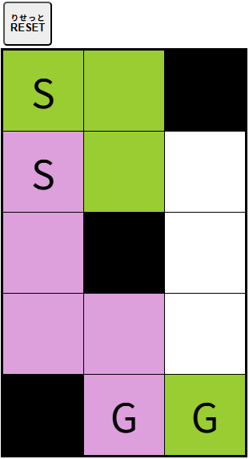

【
交差
こうさ
させるな】
同
おな
じ
色
いろ
のS(スタート)とG(ゴール)を
結
むす
びましょう。

・まず、SまたはGのどちらかのマスをクリック（タッチ）し、つなぐ
色
いろ
を
決
き
めます。
・
次
つぎ
に、
白
しろ
いマスをクリック（タッチ）すると
決
き
めた
色
いろ
になります。
・
白
しろ
いマス
以外
いがい
（
黒
くろ
いマスなど）は
選
えら
べません。
・[
RESET
りせっと
]ボタンをクリック（タッチ）すると
最初
さいしょ
からやり
直
なお
す
事
こと
ができます。
閉
と
じる